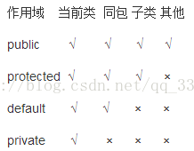

前言
纸上得来终觉浅,绝知此事要躬行。
(感谢好朋友的分享)
Java程序设计环境
- JDK：编写Java程序的程序员使用的软件。
- SE：用于桌面或简单服务器应用的Java平台。
- OpenJDK：Java SE的一个免费开源实现。
JDK安装目录介绍
| 目录名称 | 说明 |
|---|---|
| bin | 该路径下存放了JDK的各种工具命令。javac和java就放在这个目录。 |
| conf | 该路径下存放了JDK的相关配置文件。 |
| include | 该路径下存放了一些平台特定的头文件。 |
| jmods | 该路径下存放了JDK的各种模块。 |
| legal | 该路径下存放了JDK各模块的授权文档。 |
| lib | 该路径下存放了JDK工具的一些补充JAR包。 |
JVM（Java Virtual Machine），Java虚拟机
JRE（Java Runtime Environment），Java运行环境，包含了JVM和Java的核心类库（Java API）
JDK（Java Development Kit）称为Java开发工具，包含了JRE和开发工具
Hello World
public class HelloWorld {
public static void main(String[] args) {
System.out.println("HelloWorld");
}
}用到两个命令：
javac + 文件名 + 后缀名 （就是编译java文件）
java + 文件名（运行编译之后的class文件）一些注意点
Java代码中，是严格区分大小写的（比如System）
类是构建所有Java应用程序和appllet的构建块，Java应用程序中的全部内容都必须放置在类中。
类名必须以字母开头。且命名规范是骆驼命名法。
驼峰命令法(Camel)
也称骆驼式命名法正如它的名称所表示的那样，是指混合使用大小写字母来构成变量和函数的名字例如，下面是分别用骆驼式命名法和下划线法命名的同一个函数：
printEmployeePaychecks()； print_employee_paychecks()；第一个函数名使用了骆驼式命名法，函数名中的每一个逻辑断点都有一个大写字母来标记；第二个函数名使用了下划线法，函数名中的每一个逻辑断点都有一个下划线来标记
源代码的文件名必须与公共类的名字相同，并用.java作为拓展名。
运行已编译的程序时，Java虚拟机总是从指定类的main方法开始执行。且main方法必须声明为public，且必须是静态的(static)。
Java基础语法
注释
Java中的注释分为三种：
- 单行注释：
// 这是单行注释文字- 多行注释：
/*
这是多行注释文字
这是多行注释文字
这是多行注释文字
*/注意：多行注释不能嵌套使用。
- 文档注释（暂时用不到）：
/**
这是多行注释文字
这是多行注释文字
这是多行注释文字
*/使用的技巧
- 如果我们要对代码进行解释，那么就可以使用注释。
- 当注释的内容比较少，一行就写完了，可以用单行注释。
- 如果注释的内容比较多，需要写在多行，那么可以使用多行注释。
注意：注释的内容不会参与编译和运行的，仅仅是对代码的解释说明而已。所以，不管在注释当中写什么内容，都不会影响代码运行的结果。
变量
Java是强类型语言，必须为变量声明类型。Java中一共八种基本类型，4种整形，2种浮点类型，1种字符串类型char和boolean类型。
整形：int,short,long,byte。
Java中整形的范围与运行Java代码的机器无关。
- long：
400000L - 十六进制：
0xCA - 八进制：
010 - 二进制：
0b1001
Java没有任何无符号形式的整形类型。
浮点：float double
没有后缀F的浮点数值总是默认为double类型。当然也可以在最后添加后缀D或d。
浮点数值不适合于无法接受舍入误差的金融计算。如果在数值计算中不允许有任何舍入误差，就应该使用BigDecimal类。
char类型
char类型原本用于表示单个字符，不过现在如今有些Unicode字符可以用一个char值描述，另外一些unicode字符则需要2个char值。
char类型的字面量要用单引号括起来，例如’A’是编码值为65的字符常量。
char类型的值可以表示为十六进制，从\u0000到\uffff。
转义序列\u还可以出现在加引号的字符常量或字符串之外，而其他的所有转义序列都不行，例如：
public static void main(String\u005B\u005D args)`，是`[]Unicode转义序列会在解析代码之前得到处理，例如：
"\u0022+\u0022"`是`""+""强烈建议不要在程序中使用char类型，最好将字符串作为抽象数据类型使用。
boolean类型
false和true。整型值和布尔值之间不能进行相互转换
变量与常量
Java中的数字和字母范围更大。
声明一个变量之后，必须用赋值语句对变量进行显式初始化，千万不要使用未初始化的变量的值。
Java中可以将声明放在代码中的任何地方。但是变量的声明尽可能地靠近变量第一次使用的地方，这是一种良好的程序编写风格。
从Java10开始，对于局部变量，如果可以从变量的初始值推断出它的类型，就不再需要声明类型，只需要使用关键字var而无需指定类型
var feng = 12;
var fff = "feng";用final指示常量。final表示这个常量只能被赋值一次。常量名使用全大写。
如果一个常量在类的多个方法中被使用，通常将其设置成类常量，用static final。且类常量的定义放在main方法的外部
public class Main
{
static final double PI = 3.14;
public static void main(String[] args)
{
System.out.println(PI);
}
}如果一个常量被声明为public，那么其他类的方法也可以使用这个常量。
枚举
枚举类型包括有限个命名的值。
当参与/运算的两个操作数都是整数时，表示整数除法，否则表示浮点除法。
整数被0除会产生一个异常，而浮点数被0除将会得到无穷大或NAN结果。
Math类包含了各种各样的数学函数：
double x = 4;
double y = Math.sqrt(x);Java没有幂运算，需要结果Math.pow方法：double y = Math.pow(x,a);。pow方法有2个double类型参数，返回结果也是double类型。
此外还有2个最接近的近似值：Math.PI和Math.E来表示π和e。
静态导入：import static java.lang.Math.*
强制类型转换是在圆括号中给出想要转换的目标类型，后面紧跟待转换的变量名：
double x = 9.997;
int nx = (int) Math.round(x);字符串
Java没有内置的字符串类型，而是在标准Java类库中提供了一个预定义类，叫做String。每个用双引号括起来的字符串都是String类的一个实例。
用substring方法提取字串
String feng = "hello,world";
String s = feng.substring(2,3);
System.out.println(s); // "l"Java语言允许用+号拼接字符串。
当一个字符串与一个非字符串的值进行拼接时，后者会转换成字符串。
把多个字符串放一起，用一个界定符分割，用静态方法join：
String s = String.join(".","a","b","c"); // a.b.bString类没有提供修改字符串中某个字符的方法。可以提取想要保留的字串，再与希望替换的字符拼接。
由于不能修改Java字符串中的单个字符，所以在Java文档中将String类对象称为是不可变的。
可以使用equals方法检测两个字符串是否相等。不区分大小写可以用equalsIgnoreCase。
不要使用==检测两个字符串是否相等。它只能确定两个字符串是否存放在同一位置上。
空字符串是长度为0的字符串，检查方式：
if(str.length()==0)
if(str.equals(""))检查一个字符串是否是null：
if(str==null)length方法将返回采用UTF-16编码表示给定字符串所需要的代码单元数量。
每次拼接字符串的时候，都会构建一个新的String对象，即耗时，又浪费空间。使用StringBuilder类。
StringBuilder s = new StringBuilder();
s.append("a");
s.append("b");
String completedString = s.toString();
System.out.println(completedString);在使用 StringBuffer 类时，每次都会对 StringBuffer 对象本身进行操作，而不是生成新的对象，所以如果需要对字符串进行修改推荐使用 StringBuffer。
StringBuilder 类在 Java 5 中被提出，它和 StringBuffer 之间的最大不同在于 StringBuilder 的方法不是线程安全的（不能同步访问）。
由于 StringBuilder 相较于 StringBuffer 有速度优势，所以多数情况下建议使用 StringBuilder 类。
public class Study {
public String toString() {//重写Object类中toString()方法
return getClass().getName();
}
public static void main(String[] args) {
StringBuffer s1=new StringBuffer("abcd1234!?,;");
StringBuffer s2=new StringBuffer("987654321987654");
StringBuffer s3=new StringBuffer("987654321");
System.out.println("↓↓↓StringBuffer类的一些常用方法如下↓↓↓");
System.out.println("-----------------------------------------------------");
System.out.println("字符串s1的长度为：" + s1.length());//返回字符串的实际长度
System.out.println("-----------------------------------------------------");
System.out.println("字符串s1所占容器的大小为：" + s1.capacity());//返回字符串所占容器的总大小
System.out.println("-----------------------------------------------------");
System.out.println("获取字符串s1中第2个位置的字符：" + s1.charAt(2));
System.out.println("-----------------------------------------------------");
System.out.println("子字符串'654'第一次出现在字符串s2中的索引为：" + s2.indexOf("654"));
System.out.println("从指定的索引6开始搜索，返回子字符串'654'第一次出现在字符串s2中的索引：" + s2.indexOf("654",6));
System.out.println("-----------------------------------------------------");
System.out.println("子字符串'987'最后一次出现在字符串s2中的索引为：" + s2.lastIndexOf("987"));
System.out.println("从指定的索引5开始反向搜索，返回字符串'87'在字符串s2中最后一次出现的索引：" + s2.lastIndexOf("87",5));
System.out.println("-----------------------------------------------------");
s1.append('x');//在字符串s1的末尾添加字符'c'
s1.append("Java");//在字符串s1的末尾添加字符串"Java"
System.out.println("修改后的字符串s1为：" + s1);
System.out.println("-----------------------------------------------------");
s1.insert(4,"abcd");//在第4个位置插入字符串"abcd"
System.out.println("修改后的字符串s1为：" + s1);
System.out.println("-----------------------------------------------------");
s1.deleteCharAt(1);//删除字符串s1中第一个位置的字符
s1.delete(2,5);//删除字符串s1中第2到第4个位置的字符
System.out.println("修改后的字符串s1为：" + s1);
System.out.println("-----------------------------------------------------");
s1.replace(4,8,"5678");//将字符串s1中第4到第7个位置的字符串修改为"5678"
System.out.println("修改后的字符串s1为：" + s1);
System.out.println("-----------------------------------------------------");
s1.setCharAt(1,'b');//将字符串s1中第一个位置的字符修改为'b'
System.out.println("修改后的字符串s1为：" + s1);
System.out.println("-----------------------------------------------------");
s2.reverse();//将字符串s2反转
System.out.println("修改后的字符串s2为：" + s2);
System.out.println("-----------------------------------------------------");
System.out.println("截取字符串s1从第4个位置开始到结尾：" + s1.substring(4));
System.out.println("-----------------------------------------------------");
System.out.println("截取字符串s1从第4个位置开始到第7个位置结尾：" + s1.substring(4,8));
System.out.println("-----------------------------------------------------");
System.out.println("获取s1的变量类型：" + s1.getClass().getName());
System.out.println("将对象信息转化为字符串：" + s2.toString());
}
}读取输入：
Scanner in = new Scanner(System.in);
String s1 = in.nextLine();//读取一行输入
String s2 = in.next(); //读取一个单词，以空白符作为分割。
int age = in.nextInt(); //读取一个整数
double feng = in.nextDouble();
System.out.println(s1);
System.out.println(s2);
System.out.println(age);
System.out.println(feng);注意要加上import java.util.*。当使用的类不是定义在基本java.lang包中时，一定要使用import指令导入相应的包。
格式化输出：
System.out.print(x)将数值x输出到控制台。这条命令将以x的类型所允许的最大非0数位个数打印输出x。
double x = 1000.0/3.0;
System.out.print(x);Java也沿用了C语言的printf，具体使用不说了。
可以使用静态的String.format方法创建一个格式化的字符串，而不打印输出：
String x =String.format("hello,%s");文件输入与输出：
要想读取一个文件，需要构造一个Scanner对象：
Scanner in = new Scanner(Path.of("Java.iml"), StandardCharsets.UTF_8);
while(in.hasNextLine()){
System.out.println(in.nextLine());
}要想写入文件，就需要构造一个PrintWriter对象：
PrintWriter out = new PrintWriter("1.txt",StandardCharsets.UTF_8);
out.println("hello,world");
out.println("hhhhhh");
out.close();//必须有，不然写不进去如果文件不存在，则创建该文件。
import java.io.IOException;
import java.io.PrintWriter;
import java.nio.charset.StandardCharsets;
import java.nio.file.Path;
import java.util.*;
public class Draft {
public static void main(String[] args) {
Scanner in;
try {
in = new Scanner(Path.of("D:\\JavaProject\\Draft\\Draft.java"), StandardCharsets.UTF_8);
} catch (IOException e) {
throw new RuntimeException(e);
}
PrintWriter out;
try {
out = new PrintWriter("D:\\JavaProject\\Draft\\Draft.txt", StandardCharsets.UTF_8);
} catch (IOException e) {
throw new RuntimeException(e);
}
while (in.hasNextLine()) {
String line = in.nextLine();
out.println(line);
System.out.println(line);
}
in.close();
out.close();
}
}关于路径问题，可以使用下面的调用找到启动目录的位置：
String dir = System.getProperty("user.dir");
System.out.println(dir);IntelliJ IDEA的启动目录总是和.idea同级而不是当然执行的src里面的那个Main.java。
Java中，不能在嵌套的两个块中声明同名的变量。
if语句：
int feng = 321;
if(feng > 111){
System.out.println("yes");
}else{
System.out.println("no");
}while语句：
int feng = 0;
while(feng<10){
System.out.println(feng);
feng++;
}for：
for(int i = 0;i <= 10;i++){
System.out.println(i);
}在循环中，检测两个浮点数是否相等需要格外小心：
for(double x = 0;x != 10;x+=0.1)永远不会结束，由于舍入的误差，永远达不到精确的最终值。
for(int i = 1; i <= 10; i++)
{
}
//i no longer defined here
//此外，如果在for语句内部定义一个变量，这个变量就不能在循环体之外使用。switch：
int x = 1;
switch(x)
{
case 1:
System.out.println("1");
break;
case 2:
System.out.println("2");
break;
default:
System.out.println("no");
break;
}有可能触发多个case分支。如果在case分支语句的末尾没有break语句，那么就会接着执行下一个case分支语句。这种情况非常危险，因此最好不要使用switch语句。
带标签的break语句：
int n = 123;
int count = 0;
feng:
while(count < 10){
for(int i = 0; i <= 5; i++){
if(i > count){
break feng;
}
}
}
System.out.println(count);虽然代码毫无逻辑，但是至少了解了一下带标签的break。
标签必须放在希望跳出的最外层循环之外，并且必须紧跟一个冒号。执行带标签的break会跳转到带标签的语句块末尾。这里就是结束这个while循环，所以打印出来的是0。
大数：
java.math包中两个很有用的类：BigInteger和BigDecimal。这两个类可以处理包含任意长度数字序列的数值。
BigInteger a = BigInteger.valueOf(10000000);
System.out.println(a);
//对于更大的数，就是用带字符串的构造器
BigInteger b = new BigInteger("1000000000000000000000000000000000000");
System.out.println(b);此外Java没有提供运算符重载的功能，因此必须用add,multiply,divide,subtract等函数。
数组
声明数组：在声明数组变量的时候，需要指出数组类型（数组元素类型紧跟[]）和数组变量的名字。
int[] a;使用new操作符创建数组：
int[] a = new int[100];一旦创建了数组，就不能再改变它的长度。
还有一种创建数组对象并同时提供初始值的简写形式：
int[] a = {1,2,3,4,5} //最后一个值后面允许有逗号还可以声明匿名数组。这种语法可以重新初始化一个数组而无须创建新变量：
int[] a = {1,2,3,5,};
a = new int[] {1,2,3};
System.out.println(Arrays.toString(a));Java中允许有长度为0的数组，创建长度为0的数组：
new elementType[0];
new elementType[] {};创建一个数字数组时，所有元素都初始化为0。boolean数组的元素会初始化为false。对象数组的元素则初始化为一个特殊值null，表示这些元素还未存放任何对象。
使用array.length获得数组中元素的个数：
int[] a = {1,2,3,5,};
int[] b= new int[100];
System.out.println(a.length);
System.out.println(b.length);Java中的for each循环：
for(variable : collection) statementcollection这一集合表达式必须是一个数组或者是一个实现了Iterable接口的类对象。
int[] a = {1,2,3,4,5,6,};
for(int i : a){
System.out.println(i);
}for each循环语句的循环变量将会遍历数组中的每个元素，而不是下标值。
Arrays类的toString方法可以简单的打印一个数组中的所有值：
int[] a = {1,2,3,4,5,6,};
System.out.println(Arrays.toString(a));数组拷贝：
将一个数组变量拷贝到另一个数组变量，这时两个变量将引用同一数组：
int[] a = {1,2,3,4,5,6,};
int[] b = a;
b[1] = 999;
System.out.println(a[1]);//999
System.out.println(b[1]);//999如果希望将一数组中的所有值拷贝到一个新的数组中去，常用Arrays类的copyOf方法：
int[] a = {1,2,3,4,5,6,};
int[] b = Arrays.copyOf(a,a.length);
b[1] = 999;
System.out.println(a[1]);//2
System.out.println(b[1]);//999copyOf的第二个参数是新数组的大小，正常可以比原数组的长度要大，以增长数组。如果短的话，就只会拷贝前面的值。
Arrays.sort()，使用优化的快速排序算法。
多维数组
声明：
double[][] feng;初始化：
feng = new double[2][2];
int[][] a = {
{1,2,3},
{4,5,6},
{7,8,9},
};for each不能自动处理二维数组中的每一个元素，它是循环行的，因此要使用2层for each。
快速打印一个二维数组：
int[][] a = {
{1,2,3},
{4,5,6},
{7,8,9},
};
System.out.println(Arrays.deepToString(a));类与对象
面向对象程序设计（object-oriented programming,OOP）
由类构造(construct)对象的过程称为创建类的实例。
对象中的数据称为实例字段，操作数据的过程称为方法。
实现封装的关键在于，绝对不能让类中的方法直接访问其他类的实例字段。程序只能通过对象的方法与对象进行交互。
Java中，所有其他类都拓展自Object类。
类之间，最常见的关系：
- 依赖（uses-a）
- 聚合（has-a）
- 继承（is-a）
如果一个类的方法使用或操纵另一个类的对象，我们就说一个类依赖于另一个类。
Java中使用构造器构造新实例。构造器的名字应该与类名相同。
Date nowTime = new Date();
System.out.println(nowTime);对象变量并没有实际包含一个对象，它只是引用一个对象。
在Java中，任何对象变量的值都是对存储在另一个地方的某个对象的引用。new操作符的返回值也是一个引用。
在Java中，必须使用clone方法获得对象的完整副本。
标准Java类库分别包含了两个类：一个是用来表示时间点的Date类，另一个是大家熟悉的日历表示法表示日期的LocalDate类。
不要使用构造器来构造LocalDate类的对象，应当使用静态工厂方法。
LocalDate date1 = LocalDate.now();
LocalDate date2 = LocalDate.of(2001,01,02);
System.out.println(date1); //2024-09-01
System.out.println(date2); //2001-01-02
int year = date2.getYear();
int month = date2.getMonthValue();
int day = date2.getDayOfMonth();
System.out.println(year);//2001
System.out.println(month);//1
System.out.println(day);//2
LocalDate date3 = date2.plusDays(1);
System.out.println(date3);//2001-01-03
LocalDate date4 = date2.minusDays(1);
System.out.println(date4);//2001-01-01更改器方法：调用这个方法后，对象的状态会改变。
访问器方法：只访问对象而不修改对象的方法。
文件名必须与public类的名字相匹配。在一个源文件中，只能有一个公共类，但可以有任意数目的非公共类。
public class Employee_test {
public static void main(String[] args) {
Employee[] staff = new Employee[3];
staff[0] = new Employee("Carl Cracker", 75000, 1987, 12, 15);
staff[1] = new Employee("Harry Hacker", 50000, 1989, 10, 1);
staff[2] = new Employee("Tony Tester", 40000, 1990, 3, 15);
for (Employee e : staff) {
e.raiseSalary(5);
}
for (Employee e : staff) {
System.out.println("name=" + e.getName() + ",salary=" + e.getSalary() + ",hireDay=" + e.getHireDay());
}
}
}import java.time.LocalDate;
public class Employee
{
private String name;
private double salary;
private LocalDate hireDay;
public Employee(String name, double salary, int year, int month, int day){
this.name = name;
this.salary = salary;
this.hireDay = LocalDate.of(year, month, day);
}
public String getName(){
return this.name;
}
public double getSalary() {
return this.salary;
}
public LocalDate getHireDay() {
return this.hireDay;
}
public void raiseSalary(double byPercent){
double raise = salary*byPercent/100;
this.salary += raise;
}
}构造器
构造器与类同名。在构造Employee类的对象时，构造器会运行，从而将实例字段初始化为所希望的初始状态。
构造器总是结合new运算符来调用。不能对一个已经存在的对象调用构造器来达到重新设置实例字段目的。
不要在构造器中定义与实例字段同名的局部变量。
从Java10开始，对于局部变量，如果可以从变量的初始值推断出它的类型，就不再需要声明类型，只需要使用关键字var而无需指定类型
注意var关键字只能用于方法中的局部变量。参数和字段的类型必须声明。
如果对null值应用一个方法，会产生一个NullPointerException异常。
隐式参数和显式参数
raiseSalary方法有2个参数，第一个参数称为隐式参数，是出现在方法名前的Employee类型的对象。第二个参数是位于方法名后面括号中的数值，这事一个显式参数。
在每一个方法中，关键字this指示隐式参数。
注意不要编写返回可变对象引用的访问器方法
如果需要返回一个可变对象的引用，首先应该对它进行克隆。对象克隆是指存放在另一个新位置上的对象副本。
一个方法可以访问所属类的所有对象的私有数据
public String getOtherName(Employee other){
return other.name;
}
Employee other = new Employee("fengfeng",123,2001,1,2);
System.out.println(staff[0].getOtherName(other));staff[0]对象的getOtherName方法还可以访问other对象的私有字段name，是因为他们都是Employee类型对象，Employee类的方法可以访问任意Employee类型对象的私有字段。
可以将实例字段定义为final。这样的字段必须在构造对象时初始化，并且以后不能再修改这个字段。
如果类中的所有方法都不会改变其对象，这样的类就是不可变的类。
静态字段
如果将一个字段定义为static，每个类只有一个这样的字段。而对于非静态的实例字段，每个对象都有自己的一个副本。
静态字段属于类，而不属于任何单个的对象。
静态常量
静态常量很常用，例如：
public class Employee
{
public static final double PI = 3.141592653;
}然后就可以用Employee.PI来访问这个静态常量。
静态方法
静态方法是不在对象上执行的方法。例如Math类的pow方法。
可以认为静态方法是没有this参数的方法（没有隐式参数）
静态方法不能访问实例字段，但是可以访问静态字段。
建议使用类名而不是对象来调用静态方法。
下面两种情况下可以使用静态方法：
- 方法不需要访问对象状态，因为它需要的所有参数都通过显式参数提供。
- 方法只需要访问类的静态字段。
Java程序设计语言总是采用按值调用。也就是说，方法得到的是所有参数值的一个副本。具体来讲，方法不能修改传递给它的任何参数变量的内容。
方法得到的是对象引用的副本，原来的对象引用和这个副本都引用同一个对象。
实际上，对象引用是按值传递的。
- 方法不能修改基本数据类型的参数。
- 方法可以改变对象参数的状态。
- 方法不能让一个对象参数引用一个新的对象。
重载
如果多个方法有相同的名字、不同的参数，便出现了重载。编译器必须挑选出具体调用哪个方法。
Java允许重载任何方法，而不只是构造器方法。因此，要完整地描述一个方法，需要指定方法名以及参数类型。这叫做方法的签名。
返回类型不是方法签名的一部分。也就是说，不能有两个名字相同、类型参数也相同却有不同返回类型的方法。
如果在构造器中没有显式地为字段设置值，那么就会被自动地赋为默认值：数值为0、布尔值为false、对象引用为null。
方法中的局部变量必须明确地初始化，但是在类中，如果没有初始化类中的字段，将会自动初始化为默认值。
无参构造器创建对象时，对象的状态会设置为适当的默认值。如果写一个类时没有编写构造器，就会为你提供一个无参数构造器。这个构造器将所有的实例字段设置为默认值。
如果类中提供了至少一个构造器，但是没有提供无参数的构造器，那么构造对象时如果不提供参数就是不合法的。
可以在类定义中直接为任何字段赋值：
public class Employee
{
private String name="feng";初始值不一定是常量值，可以利用方法调用初始化一个字段：
private static int nextId ;
private int id= assignId();
private static int assignId(){
int r = nextId;
nextId++;
return r;
}调用另一个构造器
关键字this指示一个方法的隐式参数。此外，如果构造器的第一个语句形如this(...)，这个构造器将调用同一个类的另一个构造器。
初始化块(不常见)
在一个类的声明中，可以包含任意多个代码块。只要构造这个类的对象，这些块就会被执行。
{
id = nextId;
nextId ++;
}
public Employee(String name, double salary){
this.name = name;
this.salary = salary;
}首先运行初始化块，然后才运行构造器的主体部分。通常直接把初始化代码放在构造器中。
如果类的静态字段需要很复杂的初始化代码，那么可以使用静态的初始化块：
static
{
var generator = new Random();
nextId - generator.nextInt(10000);
}由于Java会完成自动的垃圾回收，不需要人工回收内存，所以Java不支持析构器。
包
Java允许使用包将类组织在一个集合中。借助包可以方便地组织自己的代码，并将自己的代码与别人提供的代码库分开管理。
使用包的主要原因是确保类名的唯一性。为了保证包名的绝对唯一性，要用一个因特网域名以逆序的形式作为包名，然后对于不同的工程使用不同的子包。
一个类可以使用所属包中的所有类，以及其他包中的公共类
可以使用import语句导入一个特定的类或者整个包。import语句应该位于源文件的顶部（但位于package语句的后面）。
例如导入java.util包中的所有类：
import java.time.*;只能使用星号导入一个包，而不能使用import java.*或者import java.*.*导入所有以java为前缀的包。
有一种import 语句允许导入静态方法和静态字段，而不只是类。例如：
import static java.lang.System.*;就可以使用System类的静态方法和静态字段，而不必加类前缀。
要想将类放入包中，就必须将包的名字放在源文件的开头，即放在定义这个包中各个类的代码之前。
如果没有在源文件中放置package语句，这个源文件中的类就属于无名包。
将源文件放在与完整包名匹配的子目录中。
Java和Php不同的是，Java其实算有4种访问修饰符。如果没有指定public或private，这个部分（类、方法或变量）可以被同一个包中的所有方法访问。
类的成员不写访问修饰时默认为default。默认对于同一个包中的其他类相当于公开（public），对于不是同一个包中的其他类相当于私有（private）

Jar文件使用ZIP格式组织文件和子目录。可以使用任何ZIP工具查看JAR文件。
为了使类能够被多个程序共享，需要做到下面几点：
- 把类文件放在一个目录中。需要注意，这目录是包树状结构的基目录。
- 将JAR文件放在一个目录中。
- 设置类路径。类路径是所有包含类文件的路径的集合。
最好使用-classpath选项指定类路径。
JAR文件
JAR文件是压缩的，它使用了我们熟悉的ZIP压缩格式。
通过下面的命令启动程序：
java -jar xxxxxx.jar类设计技巧
- 一定要保证数据私有。
- 一定要对数据进行初始化。
- 不要在类中使用过多的基本类型。
- 不是所有的字段都需要单独的字段访问器和字段更改器。
- 分解有过多职责的类。
- 类名和方法名要能够体现它们的职责。
- 优先使用不可变的类。
继承
继承的基本思想是，可以基于已有的类创建新的类。继承已存在的类就是复用（继承）这些类的方法，而且可以增加一些新的方法和字段，使新类能够适应新的情况。
类、超类和子类
使用extends表示继承。
通过拓展超类定义子类的时候，只需要指出子类与超类的不同之处。
只有父类的方法能访问父类的私有字段，这意味如果子类的方法不能直接访问父类的私有字段，需要使用公共接口，类似getSalary()这样的：
public double getSalary(){
return this.bonus+super.getSalary();
}这里使用的是super.getSalary()，因为我们希望调用的是超类的getSalary方法，而不是当前类的这个方法。
继承绝对不会删除任何字段或方法。
子类的构造器：
public Manager(String name, double salary){
super(name,salary);
bonus = 0;
}super(name,salary);是调用超类Employee中的这个构造器：
public Employee(String name, double salary){
this.name = name;
this.salary = salary;
}使用super调用构造器的语句必须是子类构造器的第一条语句。
如果子类的构造器没有显式地调用超类的构造器，讲自动调用超类的无参数构造器。如果超类没有无参数的构造器，并且在子类的构造器中又没有显式地调用超类的其他构造器，Java编译器就会报告一个错误。
this：
- 指示隐式参数的引用。
- 调用该类的其他构造器。
super：
- 调用超类的方法。
- 调用超类的构造器。
public static void main(String[] var0) {
var staff = new Employee[3];
Manager boss = new Manager("feng1",123);
boss.setBonus(123);
staff[0] = boss;
staff[1] = new Employee("feng2",123);
staff[2] = new Employee("feng3",123);
for(Employee e:staff){
System.out.println(e.getName());
System.out.println(e.getSalary());
}
}尽管将e声明为Employee类型，但实际上e既可以引用Employee类型的对象，也可以引用Manager类型的对象。
虚拟机知道e实际引用的对象类型，因此能够正确地调用相应的方法。
一个对象变量可以指示多种实际类型的现象称为多态。在运行时能够自动地选择适当的方法，称为动态绑定。
多态
is-a规则，它指出子类的每个对象也是超类的对象。
is-a规则的另一种表述是替换原则。它指出程序中出现超类对象的任何地方都可以使用子类对象替换。
在Java程序设计语言中，对象变量是多态的。一个Employee类型的变量既可以引用一个Employee类型的对象，也可以引用Employee类的任何一个子类的对象。
不能将超类的引用赋给子类变量。
在Java中，子类引用的数组可以转换成超类引用的数组，而不需要使用强制类型转换。
在覆盖一个方法的时候，子类方法不能低于超类方法的可见性。特别是，如果超类方法是public，子类方法必须也要声明为public。
阻止继承：final类和方法
不允许拓展的类被称为final类。在定义类的时候使用final修饰符就表明这个类是final类。
类中的某个特定方法也可以被声明为final。如果这样做，子类就不能覆盖这个方法（final类中的所有方法自动地成为final方法，但是不包括字段，也就是说字段不会自动成为final）。
强制类型转换
将一个值存入变量时，编译器将检查你是否承诺过多。如果将一个子类的引用赋值给一个超类变量，编译器是允许的。但将一个超类的引用赋给一个子类变量时，就承诺过多了。必须进行强制类型转换，这样才能够通过运行时的检查。
Manager test1 = new Manager("test1",111);
Employee test2 = new Employee("test2",111);
Employee test3 = test1; //可以
Manager test4 = (Manager) test2; //必须强制类型转换。而且这样是有问题的。我个人的理解就是，子类可以直接隐式转换成父类，但是父类需要强制类型转换成子类。
在进行强制类型转换之前，先查看是否能够成功地转换。为此只需要使用instanceof操作符就可以实现。
instanceof是Java中的二元运算符，左边是对象，右边是类；当对象是右边类或子类所创建对象时，返回true；否则，返回false。
instanceof是Java中的二元运算符，左边是对象，右边是类；当对象是右边类或子类所创建对象时，返回true；否则，返回false。instanceof左边显式声明的类型与右边操作元必须是同种类或存在继承关系，也就是说需要位于同一个继承树，否则会编译错误。
Manager test1 = new Manager("test1",111);
Employee test2 = new Employee("test2",111);
Employee test3 = test1;
//Manager test4 = (Manager) test2;
if (test2 instanceof Manager){
Manager test4 = (Manager) test2;
}所以很明显这是进入不了if的。
- 只能在继承层次内进行强制类型转换。
- 在将超类强制转换成子类之前，应该使用
instanceof进行检查
一般情况下，最好尽量少用强制类型转换和instanceof运算符
抽象类
为了提高程序的清晰度，包含一个或多个抽象方法的类本身必须被声明为抽象的。
public abstract class Person
{
public abstract String getDescription();
}除了抽象方法之外，抽象类还可以包含字段和具体方法。
public abstract class Person
{
private String name;
public Person(String name){
this.name = name;
}
public abstract String getDescription();
public String getName(){
return this.name;
}
}有些程序员认为，在抽象类中不能包含具体方法，。建议尽量将通用的字段和方法（不管是否是抽象的）放在超类（不管是否是抽象类）中。
拓展抽象类可以有两种选择，一种是在子类中保留抽象类的部分或所有抽象方法仍未定义，这样就必须将子类也标记为抽象类；另一种做法是定义全部方法，这样一来，子类就不是抽象的了。
即使不含抽象方法，也可以将类声明为抽象类。
抽象类不能实例化。但是可以定义一个抽象类的成员变量，但是这样一个变量只能引用非抽象子类的对象。
Person person = new Student("feng","aaa");受保护访问
在Java中，保护字段只能由同一个包中的类访问。
- 仅对本类可见：private
- 对外部完全可见：public
- 对本包和所有子类可见：protected
- 对本包可见：默认（很遗憾），不需要修饰符
Object：所有类的超类
可以使用Object类型的变量引用任何类型的对象：
Object obj = new Manager("feng",123);Object类型的变量只能用于作为各种值得一个泛型容器。要想对其中得内容进行具体的操作，还需要清楚对象的原始类型，并进行相应的强制类型转换；
Object obj = new Manager("feng",123);
Manager feng = (Manager) obj;
System.out.println(feng.getName());在Java中，只有基本类型不是对象，例如数值、字符、布尔类型等都不是对象。
equals方法
Object类中的equals方法用于检测一个对象是否等于另外一个对象。
例如Employee类实现一个equals方法：
public boolean equals(Object otherObject)
{
if(this == otherObject) return true;
if(otherObject == null) return false;
if(getClass() != otherObject.getClass()) return false;
Employee other = (Employee) otherObject;
String name = getName();
return Objects.equals(getName(),other.getName())
&&salary == other.getSalary()
&&getId()==other.getId();
}getClass方法将返回一个对象所属的类。
Returns the runtime class of this
Object. The returnedClassobject is the object that is locked bystatic synchronizedmethods of the represented class.
为了防备name可能为null的情况，需要使用Objects.equals方法。如果两个参数都为null，则Objects.equals(a,b)调用将返回true。如果其中一个参数为null，则返回false；否则，如果两个参数都不为null，则调用a.equals(b)。
完美的equals方法的建议：
- 显式参数命名为otherObject，稍后需要将它强制转换为另一个名为other的变量。
- 检测this与
otherObject是否相等：if(this == otherObject) return true; - 检测
otherObject是否为null，如果为null，返回false。这项检测是很必要的。if(otherObject == null) return false; - 比较this与
otherObject的类。如果equals的语义可以在子类中改变，那就使用getClass检测：if(getClass() != otherObject.getClass()) return false;
如果所有的子类都有相同的相等性语义，可以使用instanceof检测：if(!(otherObject instanceof ClassName)) return false; - 将
otherObject强制转换为相应类类型的变量：ClassName other = (ClassName) otherObject; - 根据相等性概念的要求来比较字段。使用
==比较基本类型字段，使用Objects.equals比较对象字段。如果所有的字段都匹配，就返回true；否则返回false。
如果在子类中重新定义equals，就要在其中包含一个super.equals(other)的调用。
对于数组类型的字段，可以使用静态的
Arrays.equals方法检测相应的数组元素是否相等。
可以使用@Override标记要覆盖超类方法的那些子类方法：
@Override
public boolean equals(Object otherObject)如果出现了错误，并且正在定义一个新方法，编译器就会报告一个错误。
例如这样，并没有覆盖Object类的equals方法，因此会报告错误：
@Override
public boolean equals(Employee otherObject)toString方法
返回表示对象值的一个字符串。
只要对象与一个字符串通过操作符 “+”连接起来，Java编译器就会自动地调用toString方法来获得这个对象的字符串描述。
可以不写为
x.toString()，而写作""+x。与toString不同的是，即使x是基本类型，这条语句照样能够执行。
打印数组利用Arrays.toString：
double[] x = {1,2,3,4,5};
System.out.println(Arrays.toString(x));泛型数组列表
ArrayList是一个有类型参数的泛型类。为了指定数组列表保存的元素对象的类型，需要用一对尖括号将类名括起来追加到ArrayList后面，例如ArrayList<Integer>。
ArrayList<Employee> staff1 = new ArrayList<Employee>();
ArrayList<Employee> staff2 = new ArrayList<>();
var staff3 = new ArrayList<Employee>();最好使用var关键字以避免重复写类名；如果没有使用var关键字，可以省去右边的类型参数。（菱形语法）
当然还可以把初始容量传递给ArrayList构造器：
ArrayList<Employee> staff1 = new ArrayList<Employee>(100);数组列表的容量与数组的大小有一个非常重要的区别。如果分配一个有100个元素的数组，数组就有100个空位置可以使用。而容量为100个元素的数组列表只是可能保存100个元素。但是在最初，甚至完成初始化构造之后，数组列表不包含任何元素。
使用add方法可以将元素添加到数组列表中。如果需要在数组列表的中间插入元素，可以使用add方法并提供一个索引参数。
要设置第i个元素，可以使用set。
要得到数组列表的元素，可以使用get。
ArrayList<Employee> staff = new ArrayList<>();
staff.add(new Employee("feng",123));
System.out.println(staff.get(0).getName()); //feng
staff.set(0,new Employee("hhh",3456));
System.out.println(staff.get(0).getName()); //hhh只有当数组列表的大小大于i时，才能够调用
list.set(i,x)。set方法只是用来替换数组中已经加入的元素。
size方法将返回数组列表中包含的实际元素个数。
ArrayList<Employee> staff = new ArrayList<>(100);
System.out.println(staff.size()); //0
staff.add(new Employee("feng",123));
System.out.println(staff.size()); //1remove方法可以从数组列表中间删除一个元素：
ArrayList<Employee> staff = new ArrayList<>(100);
System.out.println(staff.size()); //0
staff.add(new Employee("feng",123));
System.out.println(staff.size()); //1
Employee e = staff.remove(0);
System.out.println(staff.size()); //0
System.out.println(e.getName()); //feng可以使用for each循环遍历数组列表的内容：
ArrayList<Employee> staff = new ArrayList<>();
staff.add(new Employee("feng1",123));
staff.add(new Employee("feng2",123));
staff.add(new Employee("feng3",123));
staff.add(new Employee("feng4",123));
for(Employee e:staff){
System.out.println(e.getName());
}对象包装器与自动装箱
所有的基本类型都有一个与之对应的类。这些类称为包装器。
Integer,Long,Float,Double,Short,Byte,Character,Boolean (前六个类派生于公共的超类Number)包装器类是不可变的，即一旦构造了包装器，就不允许更改包装在其中的值。同时，包装器类型还是final，因此不能派生它们的子类。
对于ArrayList，尖括号中的类型不允许是基本类型，因此要用到包装器类，例如Integer等。
var list = new ArrayList<Integet>();对于这种调用
var list =new ArrayList<Integer>();
list.add(2);
System.out.println(list.get(0));将自动变成：
var list =new ArrayList<Integer>();
list.add(Integer.valueOf(2));
System.out.println(list.get(0));这种变换称为自动装箱。
相反的，把Integet赋给一个int时，会自动拆箱：
int n = list.get(0);
System.out.println(n);装箱和拆箱是编译器要做的工作，而不是虚拟机。编译器在生成类的字节码时会插入必要的方法调用。虚拟机只是执行这些字节码。
参数数量可变的方法
可以提供参数数量可变的方法（有时这些方法被称为”变参”(varargs)方法）。
这里的省略号...是Java代码的一部分，它表明这个方法可以接收任意数量的对象。例如：
public static void main(String[] args) {
printNumber(123,456);
}
public static void printNumber(double... numbers){
for(double e:numbers){
System.out.println(e);
}
}允许将数组作为最后一个参数传递给可变参数的方法。
因此，如果一个已有方法的最后一个参数是数组，可以把它重新定义为有可变参数的方法，而不会破坏任何已有的代码。
枚举类
定义枚举类型：
public enum Size {SMALL,MEDIUM,LARGE,EXTRA_LARGE};实际上，这个声明定义的类型是一个类，它刚好有四个实例，不可能构造新的对象。
因此，在比较两个枚举类型的值时，并不需要调用equals，直接使用==就可以了。
同样可以为枚举类型增加构造器、方法和字段。
enum Size
{
SMALL("S"),MEDIUM("M"),LARGE("L"),EXTRA_LARGE("XL");
private String abbreviation;
private Size(String abbreviation)
{
this.abbreviation = abbreviation;
}
public String getAbbreviation()
{
return this.abbreviation;
}
}枚举的构造器总是私有的。
所有的枚举类型都是Enum类的子类。
System.out.println(Size.SMALL.getClass().getName());//com.javalearn.Size它们继承了这个类的许多方法，其中最有用的一个是toString，这个方法返回枚举常量名：
System.out.println(Size.SMALL.toString()); //SMALL
System.out.println(Size.SMALL.toString().getClass().getName()); //java.lang.StringtoString的逆方法是静态valueOf：
System.out.println(Enum.valueOf(Size.class,"SMALL"));//SMALL
System.out.println(Enum.valueOf(Size.class,"SMALL").getClass().getName());//com.javalearn.Size每个枚举类型都有一个静态的values方法，它将返回一个包含全部枚举值的数组。
Size[] values = Size.values();
for(Size e:values){
System.out.println(e);
}
/*
SMALL
MEDIUM
LARGE
EXTRA_LARGE
*/ordinal方法返回enum声明中枚举常量的位置，位置从0开始计数。
System.out.println(Size.SMALL.ordinal()); //0反射
（之后会再专门针对Java安全中反射的利用进行一下学习）
反射库提供了一个丰富且精巧的工具集，可以用来编写能够动态操纵Java代码的程序。
能够分析类能力的程序称为反射。
反射机制可以用来：
- 在运行时分析类的能力。
- 在运行时检查对象。
- 实现泛型数组操作代码。
- 利用Method对象，这个对象很像C++中的函数指针。
Class类
在程序运行期间，Java运行时系统始终为所有对象维护一个运行时类型标识。这个信息会跟踪每个对象所属的类。虚拟机利用运行时类型信息选择要执行的正确方法。
可以使用一个特殊的Java类访问这些信息。保存这些信息的类名为Class。
Object类中的getClass()方法将会返回一个Class类型的实例。
var e = new Employee("feng",123);
Class cl = e.getClass();
System.out.println(cl); //class com.javalearn.EmployeeClass对象会描述一个特定类的属性。最常用的Class方法就是getName。这个方法将返回类的名字。
var e = new Employee("feng",123);
Class cl = e.getClass();
System.out.println(cl.getName());如果类在一个包里，包的名字也作为类名的一部分。所以我这里会返回com.javalearn.Employee
还可以使用静态方法forName获得类名对应的Class对象。
String className = "com.javalearn.Employee";
Class cl = Class.forName(className);获得Class类对象的第三种方法是一个很方便的快捷方式。如果T是任意的Java类型（或void关键字），T.class将代表匹配的类对象。
Class类实际上是一个泛型类。
虚拟机为每个类型管理一个唯一的Class对象。因此，可以利用==运算符实现两个类对象的比较。
var e = new Employee("feng",123);
if(e.getClass() == Employee.class){
System.out.println("ok");
}如果有一个Class类型的对象，可以用它构造类的实例。调用getConstructor方法将得到一个Constructor类型的对象，然后使用newInstance方法来构造一个实例。
String className = "com.javalearn.Employee";
Class cl = Class.forName(className);
Object obj = cl.getConstructor().newInstance();
System.out.println(obj.getClass().getName());但是这个类如果没有无参数的构造器，getConstructor方法会抛出异常。
声明异常入门
当运行时发生错误时，程序就会“抛出一个异常”。我们可以提供一个处理器“捕获”这个异常并进行处理。
异常有两种类型，非检查型异常和检查型异常。
如果一个方法包含一条可能抛出检查型异常的语句，则在方法名上增加一个throws子句：
public static void main(String[] args) throws ReflectiveOperationException {调用这个方法的任何方法也都需要一个throws声明。
利用反射分析类的能力
在java.lang.reflect包中有三个类Field、Method和Constructor分别用于描述类的字段、方法和构造器。这三个类都有一个叫做getName的方法，用来返回字段、方法或构造器的名称。
Field类中有getType方法用来返回描述字段类型的一个对象。Method和Constructor也有报告参数类型的方法：getParameterTypes。Method类还有一个报告返回类型的方法getReturnType。
这三个类都有一个名为getModifiers的方法，它将返回一个整数，用不同的0/1位描述所使用的修饰符，如public和static。还可以利用Modifier.toString方法将修饰符打印出来。
| 修饰符 | 对应的int类型 |
|---|---|
| public | 1 |
| private | 2 |
| protected | 4 |
| static | 8 |
| final | 16 |
| synchronized | 32 |
| volatile | 64 |
| transient | 128 |
| native | 256 |
| interface | 512 |
| abstract | 1024 |
| strict | 2048 |
Class类中的getFields、getMethods和getConstructors方法将分别返回这个类支持的公共字段、方法和构造器的数组，其中包括超类的公共成员。
Class类的getDeclareFields、getDeclareMethods和getDeclaredConstructors方法将分别返回类中声明的全部字段、方法和构造器的数组，其中包括私有成员、包成员和受保护成员，但不包括超类的成员 。
下面这个程序显示如何打印一个类的全部信息：
package com.javalearn;
import java.lang.reflect.Constructor;
import java.lang.reflect.Field;
import java.lang.reflect.Method;
import java.lang.reflect.Modifier;
public class ReflectionTest
{
public static void main(String[] args) throws ReflectiveOperationException
{
String className = "com.javalearn.Employee";
Class cl = Class.forName(className);
Class supercl = cl.getSuperclass();
String modifiers = Modifier.toString(cl.getModifiers());
if (modifiers.length()>0) System.out.print(modifiers+" ");
System.out.print("class " + className);
if(supercl !=null && supercl !=Object.class) System.out.print(" extends " + supercl.getName());
System.out.print("\n{\n");
printConstructors(cl);
System.out.println();
printMethods(cl);
System.out.println();
printFields(cl);
System.out.print("}");
}
public static void printConstructors(Class cl)
{
Constructor[] constructors = cl.getDeclaredConstructors();
for(Constructor c:constructors)
{
String name = c.getName();
System.out.print(" ");
String modifiers = Modifier.toString(c.getModifiers());
if(modifiers.length()>0) System.out.print(modifiers + " ");
System.out.print(name + "(");
Class[] paramTypes = c.getParameterTypes();
for(int j = 0;j<paramTypes.length;j++)
{
if(j>0) System.out.print(", ");
System.out.print(paramTypes[j].getName());
}
System.out.println(");");
}
}
public static void printMethods(Class cl)
{
Method[] methods = cl.getDeclaredMethods();
for(Method m :methods)
{
Class retType = m.getReturnType();
String name = m.getName();
System.out.print(" ");
String modifiers = Modifier.toString(m.getModifiers());
if(modifiers.length()>0) System.out.print(modifiers+" ");
System.out.print(retType.getName() + " " + name + "(");
Class[] paramTypes = m.getParameterTypes();
for(int j =0; j<paramTypes.length;j++)
{
if(j>0) System.out.print(", ");
System.out.print(paramTypes[j].getName());
}
System.out.println(");");
}
}
public static void printFields(Class cl)
{
Field[] fields = cl.getDeclaredFields();
for(Field e:fields)
{
Class type = e.getType();
String name = e.getName();
System.out.print(" ");
String modifiers = Modifier.toString(e.getModifiers());
if(modifiers.length()>0) System.out.print(modifiers+" ");
System.out.println(type.getName()+" " + name+ ";");
}
}
}
使用反射在运行时分析对象
要想查看字段的具体内容，关键方法是Field类中的get方法。如果f是一个Field类型的对象（例如，通过getDeclaredFields得到的对象），obj是某个包含f字段的类的对象，f.get(obj)将返回一个对象，其值为obj的当前字段值。
此外，f.set(obj,value)将把对象obj的f表示的字段设置为新值value。
但是这有一个问题，如果那个字段是私有字段，get和set会抛出一个IllegalAccessException。只能对可以访问的字段使用get和set方法。
反射机制的默认行为受限于Java的访问控制。不过，可以调用Field、Method或Constructor对象的setAccessible方法覆盖Java的访问控制：
f.setAccessible(true);setAccessible方法是AccessibleObejct类的一个方法，它是Field、Method和Constructor类的公共超类。这个特性是为调式、持久存储和类似机制提供的。
所以具体获得一个字段的代码可以是这样：
var feng = new Employee("feng",123);
Class cl = feng.getClass();
Field f = cl.getDeclaredField("salary");
f.setAccessible(true);
Object v = f.get(feng);
System.out.println(v);调用任意方法和构造器
可以用Field类的get方法查看一个对象的字段。与之类似，Method类有一个invoke方法，允许你调用包装在当前Method对象中的方法。invoke方法的签名：
Object invoke (Object obj, Object... args)第一个参数是隐式参数，其余的对象提供显示参数。对于静态方法，第一个参数可以忽略，即可以把它设置为null。
如果返回类型是基本类型，invoke方法会返回其包装器类型。
想要得到Method对象的话，可以调用getDeclareMethods方法，也可以调用Class类的getMethod方法或getDeclaredMethod方法。不过，有可能存在若干个同名的方法，因此要准确地得到想要的那个方法，必须提供想要的方法的参数类型。getMethod的签名：
Method getMethod(String name, Class... parameterTypes)所以得到那个方法可能还需要提供方法签名。之后调用invoke方法即可调用：
public void test(String name)
{
System.out.println(name);
}
var method = cl.getMethod("test", String.class);
method.invoke(feng,"123");可以使用类似的方法调用任意的构造器。将构造器的参数类型提供给Class.getConstructor方法，并把参数值提供给Constructor.newInstance方法。
Class cl = Employee.class;
Constructor cons = cl.getConstructor(String.class,double.class);
Object obj = cons.newInstance("feng",123);
Employee feng = (Employee) obj;
System.out.println(feng.getName());//feng继承的设计技巧
- 将公共操作和字段放在超类中。
- 不要使用受保护的字段。
- 使用继承实现”is-a”关系。
- 除非所有继承的方法都有意义，否则不要使用继承。
- 在覆盖方法时，不要改变预期的行为。
- 使用多态，而不要使用类型信息。
- 不要滥用反射。
接口
接口用来描述类应该做什么，而不指定它们具体应该怎么做。
接口中的所有方法都自动是public方法。因此，在接口中声明方法时，不必提供关键字public。
接口可以定义常量，但是接口绝不会有实例字段。
提供实例字段和方法实现的任务应该由实现接口的那个类来完成。因此，可以将接口看成是没有实例字段的抽象类。（但是两个概念还是有一定区别的）
让类实现一个接口，通常需要完成下面两个步骤：
- 将类声明为实现给定的接口。
- 对接口中的所有方法提供定义。
要将类声明为实现某个接口，需要使用关键字implements。
在接口声明中，没有将
compareTo方法声明为public，这是因为在接口中的所有方法都自动是public。不过，在实现接口时，必须把方法声明为public；否则，编译器将认为这个方法的访问属性是包可见性，这是类的默认访问属性。
public class Employee extends Person implements Comparable<Employee>
{
......
public int compareTo(Employee other)
{
return Double.compare(this.salary,other.getSalary());
}
.....
}
//在Java5中，Comparable接口已经提升为一个泛型类型。
/*
public interface Comparable<T>
{
int compare(T other);
}
*/接口的属性
接口不是类。具体地说，不能使用new运算符实例化一个接口。
尽管不能构造接口的对象，却能声明接口的变量。接口变量也必须引用实现了这个接口的类对象：
Comparable x;
x = new Employee("feng",123);也可以用instanceof检查一个对象是否实现了某个特定的接口。
Employee feng = new Employee("feng",123);
if(feng instanceof Comparable)
{
System.out.println("ok");
}与建立类的继承层次一样，也可以拓展接口。
虽然在接口中不能包含实例字段，但是可以包含常量。
public interface Moveable
{
void move(double x, double y);
double SPEED_LIMIT= 95;
}与接口中的方法都自动被设置为public一样，接口中的字段总是public static final。
尽管每个类只能有一个超类，但却可以实现多个接口。可以使用逗号将想要实现的各个接口分隔开。
class Employee implements Cloneable, Comparable实际上，接口可以提供多重继承的大多数好处，同时还能避免多重继承的复杂性和低效性。
默认方法
可以为接口提供一个默认实现。必须用default修饰符标记这样一个方法。
public interface Comparable<T>
{
default int compareTo(T other) {return 0;}
}默认方法可以调用其他方法。
解决默认方法冲突
如果先在一个接口中将一个方法定义为默认方法，然后又在超类或另一个接口中定义同样的方法，会发生什么情况？
- 超类优先。如果超类提供了一个具体的方法，同名而且具有相同参数类型的默认方法会被忽略。
- 接口冲突。如果一个接口提供了一个默认方法，另一个接口提供了一个同名而且参数类型（不管是否是默认参数）相同的方法，必须覆盖这个方法来解决冲突。
两个接口如果冲突并不重要。如果至少有一个接口提供了一个实现，编译器就会报告错误，程序员就必须解决这个二义性。
异常
处理错误
异常处理的任务就是将控制权从产生错误的地方转移到能够处理这种情况的错误处理器。
在Java中，如果某个方法不能够采用正常的途径完成它的任务，可以通过另外一个路径退出方法。在这种情况下，方法并不返回任何值，而是抛出了一个封装了错误信息的对象。需要注意的是，这个方法将会立刻退出，并不返回正常值。此外，也不会从调用这个方法的代码继续执行，取而代之的是，异常处理机制开始搜索能够处理这种异常状况的异常处理器。
异常对象都是派生于Throwable类的一个类实例。如果Java中内置的异常类不能满足需求，用户还可以创建自己的异常类。
所有的异常都是有Throwable继承而来，但在下一层立即分解为两个分支：Error和Exception。
Erroe类层次结构描述了Java运行时系统的内部错误和资源耗尽错误。
Exception类层次结构又分解为两个分支：一个分支派生于RuntimeException；另一个分支包含其他异常。一般的规则是由编程错误导致的异常属于RuntimeException；如果程序本身没有问题，但由于像I/O错误这类问题导致的异常属于其他异常（IOException）。
Java语言规范将派生于Error类或RuntimeException类的所有异常称为非检查型异常，所有其他的异常称为检查型异常。
要在方法的首部指出这个方法可能抛出一个异常，所以要修改方法首部，以反映这个方法可能抛出的检查型异常。如果一个方法有可能抛出多个检查型异常类型，那么就必须在方法的首部列出所有的异常类。
- 不需要声明Java的内部错误，即从Error继承的异常。
- 也不应该声明从
RuntimeException继承的那些非检查型异常。
如果在子类中覆盖了超类的一个方法，子类方法中声明的检查型异常不能比超类方法中声明的异常更通用（子类方法可以抛出更特定的异常，或者根本不抛出任何异常。）如果超类方法没有抛出任何检查型异常，子类也不能抛出任何检查型异常。
如果类中的一个方法声明它会抛出一个异常，而这个异常时某个特定类的实例，那么这个方法抛出的异常可能属于这个类，也可能属于这个类的一个子类。
throw new EOFException抛出异常非常容易：
- 找到一个合适的异常类。
- 创建这个类的一个对象。
- 将对象抛出。
一旦方法抛出了异常，这个方法就不会返回到调用者。也就是说，不必操心建立一个默认的返回值或错误码。
创建异常类
我们需要做的只是定义一个派生于Exception的类，或者派生于Exception的某个子类，如IOException。习惯做法是，自定义的这个类应该包含两个构造器，一个是默认的构造器，另一个是包含详细描述信息的构造器（超类Throwable的toString方法会返回一个字符串，其中包含这个详细信息，这在调试中非常有用）。
捕获异常
要想捕获一个异常，需要设置try/catch语句块：
try
{
var in =new FileInputStream("2.txt");
}
catch(IOException exception)
{
exception.printStackTrace();
}如果try语句块中的任何代码抛出了catch子句中指定的一个异常类，那么
- 程序将跳过try语句块的其余代码。
- 程序将执行catch子句中的处理器代码。
如果try语句块中的代码没有抛出任何异常，那么程序将跳过catch子句。
如果方法中的任何代码抛出了catch子句中没有声明的一个异常类型，那么这个方法就会立即退出（希望它的调用者为这种类型的异常提供了catch子句）。
一般的经验是，要捕获那些你知道如何处理的异常，而继续传播那些你不知道怎样处理的异常。
捕获多个异常
在一个try语句块中可以捕获多个异常类型，并对不同类型的异常做出不同的处理，要为每个异常类型使用一个单独的catch子句。
try
{
....
}
catch(FileNotFoundException e)
{
...
}
catch(IOException e)
{
...
}异常对象可能包含有关异常性质的信息。要想获得这个对象的更多信息，可以尝试使用e.getMessage()得到详细的错误信息。
finally子句
不管是否有异常被捕获，finally子句中的代码都会被执行：
public static void main(String[] args) throws FileNotFoundException,IOException
{
FileInputStream in = null;
try
{
in =new FileInputStream("2.txt");
}
catch(IOException exception)
{
System.out.println(exception.getMessage());
}
finally
{
in.close();
}
}其实这里的finally子句也有可能抛出异常。
finally子句的体要用于清理资源。不要把改变控制流的语句（return,throw,break,continue）放在finally子句中。
try-with-Resources语句
try-with-Resources语句（带资源的try语句）的最简形式为：
try(Resource res = ...)
{
work with res
}try块退出时，会自动调用res.close()。
使用异常的技巧
- 异常处理不能代替简单的测试。
- 不要过分地细化异常。
- 充分利用异常层次结构。
- 不要压制异常。
- 在检测错误时，“苛刻’要比放任更好。
- 不要羞于传递异常。